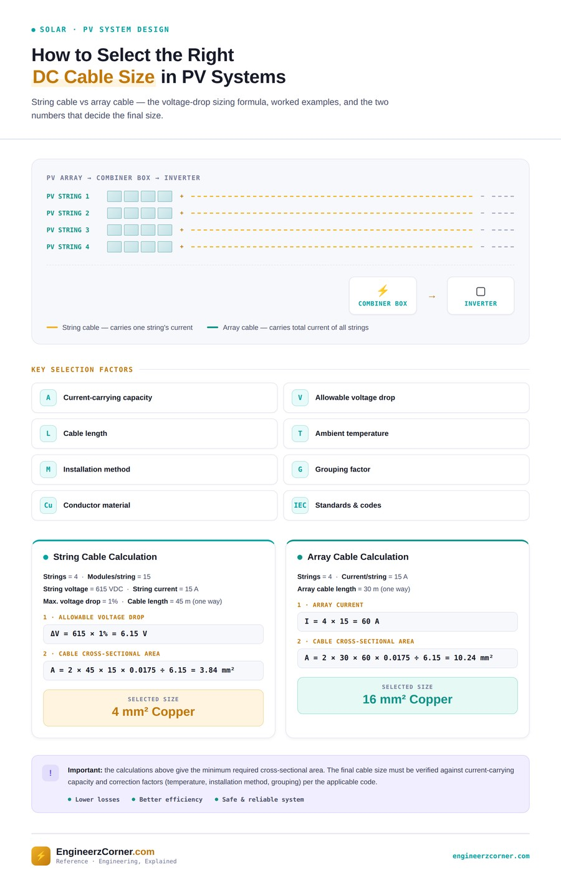

A PV array's DC side has two distinct cable runs, and mixing them up leads to an undersized array cable. The string cable runs from each string of series-connected modules down to the combiner box, carrying just that one string's current. The array cable runs from the combiner box to the inverter, carrying the sum of every string's current. Same voltage-drop method, very different current.

String cable vs array cable — voltage-drop sizing method, worked example, and the factors that govern final selection.
String cable vs array cable
The voltage-drop sizing formula
Both cables are sized the same way: fix an allowable voltage drop (commonly around 1–2% of system voltage for the DC side), then solve for the minimum cross-sectional area that keeps the drop under that limit over the cable's one-way length.
Worked example — string cable
| Given | Value |
|---|---|
| Number of strings | 4 |
| Modules per string | 15 |
| String voltage | 615 VDC |
| String current | 15 A |
| Max. allowable voltage drop | 1% |
| String cable length (one way) | 45 m |
A = (2 × 45 × 15 × 0.0175) / 6.15 = 3.84 mm²
Worked example — array cable
| Given | Value |
|---|---|
| Number of strings on this combiner | 4 |
| Current per string | 15 A |
| Array cable length (one way) | 30 m |
| Max. allowable voltage drop | Same 6.15 V basis |
A = (2 × 30 × 60 × 0.0175) / 6.15 = 10.24 mm²
Key selection factors
The voltage-drop calculation only gives a starting area. The size that's actually specified has to hold up against every one of these:
- ACurrent carrying capacity — the cable's rated ampacity for its size, insulation and conductor material must exceed the design current.
- VAllowable voltage drop — the percentage limit used to derive the minimum area in the first place.
- LCable length — longer one-way runs push the required area up directly, as the formula shows.
- TAmbient temperature — rooftop and rack-mounted DC cable often sees higher ambient than a standard 30°C table assumes.
- MInstallation method — conduit, cable tray or free air in open air each carry a different current for the same conductor size.
- GGrouping factor — multiple current-carrying circuits bundled or run together derate each other's capacity.
- CConductor material — copper vs aluminium changes both resistivity in the formula and the tabulated ampacity.
- SStandards & codes — the applicable code (e.g. IEC) sets the base ampacity tables and the correction factors below.
Derating factors: why the calculated area isn't always the final size
A cable's ampacity table value is measured under fixed reference conditions — usually a specific ambient temperature, a single circuit, and a defined installation method. PV DC cable rarely sees all three at once: it's often run in a hot rooftop environment, alongside other circuits in the same conduit or tray, and clipped to a mounting rail rather than laid free in open air. Each departure from the reference condition derates — reduces — the current the cable can actually carry safely.
| Ambient temp. | Typical Ct (XLPE, 90°C base) |
|---|---|
| 30°C (reference) | 1.00 |
| 40°C | ~0.91 |
| 50°C | ~0.82 |
| 60°C | ~0.71 |
| 70°C | ~0.58 |
Illustrative only. Rooftop-mounted DC cable can see cell/cable temperatures well above 40–50°C in direct sun — always pull the exact factor from the cable manufacturer's data or the applicable code table.
| Circuits grouped together | Typical Cg |
|---|---|
| 1 circuit | 1.00 |
| 2 circuits | ~0.80 |
| 4 circuits | ~0.65 |
| 6+ circuits | ~0.57 |
Grouping several string or array cables in one conduit, tray, or tight bundle reduces each cable's ability to shed heat — the more circuits bunched together, the lower the factor.
Putting it together
Final cable selection needs both checks to pass, and the larger conductor from the two governs:
Gives the minimum area to keep ΔV within the allowable percentage over the run length — the calculation worked through above.
The selected size's Iz (tabulated ampacity × all applicable derating factors) must still be ≥ the design current it will actually carry.
On short, lightly grouped runs the voltage-drop calculation usually governs and derating barely matters. On longer, hotter, heavily grouped runs — a common combination on large rooftop or ground-mount arrays — the derated ampacity check can push the required size up past what the voltage-drop formula alone suggested. Both numbers should be checked, and the bigger cable specified.
Key takeaways
- ✓String cable and array cable are sized with the same voltage-drop formula, but carry very different currents — one string's current vs the combined total.
- ✓A = (2 × L × I × ρ) ÷ ΔV gives the minimum cross-sectional area — round up to the next standard conductor size.
- ✓Temperature, grouping and installation method each derate a cable's tabulated ampacity — and the factors multiply together, not add.
- ✓The final selected size must satisfy both the voltage-drop minimum and the derated current-carrying capacity — whichever demands the larger conductor wins.
- ✓Always verify the final size against the current-carrying capacity table, correction factors, and the applicable code (e.g. IEC) rather than the calculated area alone.